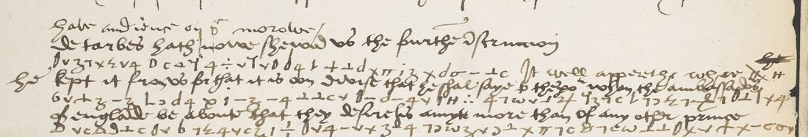

At a glanceExisting decipherment · complete
- The letter
- Ghinucci, Lee and Poyntz to Wolsey, Valladolid, 17 July 1527; DECODE catalogues it as Poyntz alone. The calendar prints it as Letters and Papers IV no. 3271.
- Where
- British Library, Cotton MS Vespasian C IV (new ff. 174–177); DECODE R8565, 8 images, about five short cipher bands.
- The cipher
- The Lee–Worcester cipher of 1526–1529: graphic symbols for letters plus a small nomenclator.
- How it was read
- Every cipher run has a decipherment between the lines (by Tuke), and the calendar prints it. The key was not applied; the symbols are unreadable at thumbnail size.
- What it says
- Charles professes goodwill to Henry; Milan with the daughter of Portugal is floated for the duke of Richmond; the French envoy withheld a fourth instruction.
- Still open
- Image 1 was not checked on the full images (it should open with the 15 July summons). The exact English of the decipherment was not transcribed.
- Credit
- Satoshi Tomokiyo, for the reconstructed Lee–Worcester key.
01 The record
DECODE R8565 has eight images, 7 pages of text, status “Partially decrypted”, with inline cleartext and inline plaintext both marked “Yes”. The key linked to it is “Lee–Worcester Cipher (1526–1529)”. The public thumbnails (200 pixels wide) show:
- seven written pages under the Cotton running head “Hispania 1527”, mostly English in clear;
- about five short bands in which a line of cipher carries a line of decipherment above it (images 2, 3, 5, 6 and 7), which is DECODE’s “Partially decrypted” and “inline plaintext”;
- three signatures at the foot of image 7, as expected for Ghinucci, Lee and Poyntz;
- image 8, the address leaf with its endorsement.
So the catalogue entry is wrong on two counts. The letter is not from Poyntz alone but from all three ambassadors, and the recipient is Wolsey.
02 Where it sits in the volume
Letters and Papers cites the old foliation of Vespasian C IV, and DECODE the new. In this stretch the two differ by eight. Old numbers marked with a question mark in the table are inferred from that offset; they were not seen on the leaves. The anchor is the neighbouring record R8566: new ff. 178–181, old ff. 170–173 as written on the leaves (see targets/lee1526/). That is the calendar’s no. 3270, Lee to Henry VIII, 17 July, “Vesp. C. IV. 170”. Both end on the offer of the daughter of Portugal.
| DECODE | new ff. | old ff. | Letters and Papers IV |
|---|---|---|---|
| R8561 | 166 | 158? | clear leaf, no cipher (targets/lee1526/) |
| R8565 | 174–177 | 166–169 (inferred) | no. 3271, second part (“f. 166”), to the signatures |
| R8566 | 178–181 | 170–173 | no. 3270, Lee to Henry VIII (“f. 170”) |
| R8567 | 182–185 | 174–177? | no. 3272? (“f. 174”), see section 05 |
The calendar’s footnote to no. 3271 puts its second part at f. 166, starting “Were sent for to court on the 15th July”. It runs through the 15 and 16 July audiences to “17 July 1527. Signed.” That fits a seven-page record ending in three signatures.
03 What the cipher says
The calendar prints the deciphered passages in italics. For this part of no. 3271 they are the following. The words are the calendar’s summary of Tuke’s decipherment, not the letter’s own spelling, except where the calendar quotes.
… Perceive the French would not have brought him to show any demands. He professes willingness to do everything for the King, and we avoid giving him any token but that the King and your Grace are still wholly his.
… Buclans asked if they restored Sforza, what security they should have that he would not give up the duchy to France, and suggested that the Emperor might give it along with the daughter of Portugal to the duke of Richmond.
De Tarbes has now shown us the fourth instruction. Perceive well why he withheld it; for he is to say to the Emperor, before the English ambassadors, that they desire his amity more than that of any other prince. 17 July 1527. Signed.
So the ambassadors kept three things out of reach of anyone who opened the packet. First, they were privately reassuring Charles that Henry and Wolsey were still “wholly his”, while they mediated alongside the French. Second, the Emperor’s side had floated a marriage: Milan and Maria, daughter of Manuel I of Portugal (the Emperor’s niece), for Henry Fitzroy, duke of Richmond, Henry’s illegitimate son. Third, the French envoy had been told to court Charles in front of the English.
The companion letter no. 3272, from the same three men and “chiefly cipher, deciphered by Tuke”, continues in the same vein. It reports an intercepted despatch from Charles’s ambassador in France: De Tarbes could offer the Viceroy’s conditions undiminished; Lautrec had authority to conclude in Italy; Wolsey had pressed Francis to marry the Princess Mary. It also names a portion of 400,000 ducats for the Portuguese match.
04 The cipher
This is the cipher Lee and Ghinucci used with Wolsey from 1526 to 1529: graphic symbols for letters, with further symbols for words and names (a small nomenclator). Satoshi Tomokiyo reconstructed it, and his table is attached on DECODE to R8566. It has already been checked against the interlinear decipherments of two sibling records. On R8566, the symbols under “possibilite” and “good” decrypt to p-o-ss-i-b-i-l-i-t-e and g-o-o-d. On R8567, the run under “can not” decrypts to c-a-n-n-o. The key was not applied to R8565, because its symbols cannot be made out at thumbnail size and the decipherment exists.

05 What remains open
- The first page. On the full images, confirm that image 1 opens with the 15 July summons to court (no. 3271, second part) and not “Wrote in former letters of the arrival of Ave Maria” (no. 3272). Either way the cipher was deciphered by Tuke and is in print, so the outcome does not change.
- The exact wording. The calendar summarises. The English of the interlinear decipherment, and of Tuke’s separate decipher of no. 3272 in the Record Office (now The National Archives, SP 1), was not transcribed.
- R8567’s place. On the same offset, the calendar’s “f. 174” for no. 3272 would fall on new f. 182, the first leaf of R8567. Its notes identify that record as a Lee-and-Poyntz despatch with old foliation 162–165, with the decipherment “it can not be so well bestowed. we know well you will kepe hit full well secrets from the frenchemen…”. This does not affect R8565.
Full texts
The transcription and the decryption of every document on this page, so that the reading can be used and checked. Short files are shown here; all are in the repository.
R8567, Vesp. C IV ff. 182-185, Valladolid, July 1527 (contemporary interlinear decipherment of the three runs on f. 184v)
A long clear English despatch of Edward Lee and Sir Francis Poyntz to Wolsey on their audiences with Charles V and Gattinara (Francesco Sforza, the two millions of the ransom, the treaty of Madrid); three short runs in the Lee-Worcester cipher are deciphered above the line: 'we know well you will kepe hit full well secrets from the frenchemen'.
Decryption
it can not be so well bestowed we know well you will kepe hit full well secrets from the frenchemen your grace may consider that he durst not have proposed this thing being so high and afterward tell them of what he had done
R8565, Vesp. C IV ff. 174-177, Valladolid, 17 July 1527 (L&P IV 3271, Tuke's decipherment in italics)
Part of the joint despatch of Ghinucci, Lee and Poyntz to Wolsey, 17 July 1527, calendared in full in Letters and Papers Henry VIII IV no. 3271: the French envoy's dealings, the suggestion that the Emperor might give the duchy of Milan with the daughter of Portugal to the Duke of Richmond, and the bishop of Tarbes's fourth instruction. The interlinear decipherment is only on the DECODE images.
Decryption
# R8565: Ghinucci, Lee and Poyntz to Wolsey, Valladolid, 17 July 1527 (BL Cotton Vesp. C IV ff. 174-177), reading of the cipher passages Re-read 23 Oct 2026 (Claude Opus 5.5, REREAD_BRIEF batch b31); log in `R8565_reread_log.md`. **Rests on the contemporary decipherment written over and between the cipher lines** (darker ink, a different hand from the despatch; L&P IV 3271: "The cipher deciphered by Tuke"), read on the full-resolution DECODE images `IMG_R8565_I39496_P1..P7` (6600 x 9300 px, fetched logged in 23 Oct 2026). Each passage was checked against the cipher signs with S. Tomokiyo's Lee-Worcester key (the DECODE document on the record); every check agrees (Notes). The despatch is clear English; only these five passages are in cipher. The clear words that lead into each passage are in the Notes, not in the reading. Conventions: plain = carried by the decipherment and the signs; `[?word]` partly carried; `[word]` supplied; `[…]` unread. Spelling as written; *p̃*, *ye*, *yt* expanded to *the*, *that*. ## Reading Yet [?bere] the frenchemen, and that possible had not ben for them to have brought hym to shewe any demaundes, but wolde have stikkyd upon the treatie of Madrill; but evermore, aswell in thair presence as oute, for the kinges highnes he wolde doo all thinges. That the kinges highnes [and] your grace be as hoole his as ever you have ben. [?Wher] he [?fearith] lest the frensh king wil not be brought to raison, wherfore it shall be as well meritorious as honorable and high deed to wynne them in peace and amite, wherof yf the kinges highnes and your grace do not, we thinke it wolde be long or it be doone. What suretie shal we have that he shal not rendre the duchy unto the frenche kinges handes? We can not doubt but that he wol. And therfor it is better that the Emperour bestowe it upon some of his frendes, that knowes non so great as the kinges grace, and therfore [?yf] [?he] [?wolde] [?geve] the doughter of Portugalo for the duke of Richmont, and the duchy of Millayn with her, how say yow, [?how] doth this like yow? That thinges were better to gyve to oon of his frendes than to this man that is nothing mete for it. De Tarbes hath nowe shewed us the fourth instruction. He kept it from us for that it [?is] oon devise that he shal saye to the Emperour, when the ambassadors of England be about, that they desireth his amyte more than of any other prince. ## Notes - **Passage 1, f. 174v (image P2) ll. 26-29 and f. 175r (P3) ll. 1-2.** Lead-in, clear: *we will praie that he can not* … The decipherment is written in five lines over and under the two faint cipher lines of P2 and covers the cipher of P3 ll. 1-2 as well. Checked signs: `= 1 + x v c ÷ ɔ v c` *and the frenchemen* (P2), `3 7 0` *had*, `c ⊥ ʒ` *not*, `ξ v v c` *been*, `ℓ` *for*, `÷` *them*, `Ð` *have*, `ξ x ⊥ … Δ 3 ʒ` *browght*, `Hf` *hym*, `7 c ω` *any*; on P3 l. 1 `ξ d ʒ` *but*, `Ð` *have*, `4 ʒ - 6 6 v c` *stikken* (the decipherer wrote *stikkyd*), `ɔ 7 0 x - 9 9` *madrill*, `ξ d ʒ` *but*; *aswell in thair presence as oute* is clear on P3 ll. 1-2 and copied into the decipherment; P3 l. 2 `‡ H … ð ⊥ ⊥ 7 9 9 π - c Δ 4` *(the) king's highness he … do all things*. *[?bere]* sits over `ξ x 7 7 …` at the end of P2 l. 26 (b-r-a-a?), not settled; L&P paraphrases the sentence "Perceive the French would not have brought him to show any demands". After *all thinges* the decipherer copied the clear *our lord gyve [hym] grace* of P3 l. 2. - **Passage 2, f. 175r (P3) ll. 6-9**, decipherment interlined (ll. 6-7) and in the left margin (ll. 8-9). Checked: `‡ = H 6 7 4` *the kinges highnes, your grace, be as*, `3 - 4` *his*, `7 4` *as*, `v d x x` *ever*, `m` *you*, `Ð` *have*, `6 v v` *ben*; `x 7 - 4 ⊥ c` *raison*; `= 7 ɔ - ʒ v` *and amite* (the margin's word, read *amite* on the sign: L&P's "amity"); `ℓ ‡ = H ð ⊥ ⊥ 5` *yf the kinges highnes and your grace do not*. Lead-in, clear: *… which was the cause in effect that we wold so mindfully …*; the passage runs into the clear *Immediately* (f. 175r l. 10). - **Passage 3, f. 176v (P6) ll. 21-28.** Lead-in, clear: *What thinke you, sayth he, wolde the kyng advise us to take Franciscus Sforza agayne for duc? What* … Checked: `∴ ξ Ð 1 H ∴ 5 x v c 0 x v` *shal we have that he shal not rendre*, `- 4 3 7 c 0 4` *(i)s handes*, `ξ σ 7 c` *we can*, `ξ d ʒ 1 H Φ` *but that he wol*, *and therfor it is bett[er] that the Empo[rour] bestowe it upon some* clear, `3 - 4 + x - v c 0 4 1 6 c ⊥ Y 4 c ⊥ c v 4 ⊥ Δ x … 7 ʒ 7 4 ‡` *his frendes that knowes non so great as the king(es grace)*, `π - 4 9 - 6 v m` *this like you*, `π 7 c + π - 4 ɔ 7 c 1 - 4 c ⊥ π - c Δ ɔ v v ʒ ℓ - ʒ` *than to this man that is nothing mete for it*. The words between *therfore* and *the doughter of Portugalo* are written over each other in the decipherment and were not settled (four `[?…]`); L&P: "suggested that the Emperor might give it along with the daughter of Portugal to the duke of Rich[mond]". Between *like yow* and *That thinges* the clear text has *I sayd no more but it must be … that word in a generalte*. - **Passage 4, f. 177r (P7) ll. 13-17**, decipherment interlined. Checked: `0 v ʒ 7 x ξ v 4` *de tarbes*, `c ⊥ Y` *now*, `4 ÷ ⊥ Y v 0` *shewed*, `+ ⊥ d x π` *fourth*, `- c … σ ʒ - ⊥ c` *instruction*, `6 v † ʒ - ʒ` *kept it*, `⊥ ⊥ c v 0 v - ɩ - 4 v` *oon devise*, `1 H ∴ 4 7 ω` *that he shal saye*, `π 7 c ϑ 7 c ω ⊥ π … † x - c σ v` *than of any other prince*. *[?is]*: the signs give `- 4` *is*; the decipherment's word there is not clear. - **f. 174r (P1) l. 11**: one cipher word, `- c ʒ - ɔ 7 σ - ⊥ c`, glossed *intimacion* (*might speke to the intimacion*); not in the reading body. - Look-alike letters: 0 (the reading follows the decipherer's hand, not sign values chosen between look-alikes).
Reading
# R8565: Ghinucci, Lee and Poyntz to Wolsey, Valladolid, 17 July 1527 (BL Cotton Vesp. C IV ff. 174-177), reading of the cipher passages Re-read 23 Oct 2026 (Claude Opus 5.5, REREAD_BRIEF batch b31); log in `R8565_reread_log.md`. **Rests on the contemporary decipherment written over and between the cipher lines** (darker ink, a different hand from the despatch; L&P IV 3271: "The cipher deciphered by Tuke"), read on the full-resolution DECODE images `IMG_R8565_I39496_P1..P7` (6600 x 9300 px, fetched logged in 23 Oct 2026). Each passage was checked against the cipher signs with S. Tomokiyo's Lee-Worcester key (the DECODE document on the record); every check agrees (Notes). The despatch is clear English; only these five passages are in cipher. The clear words that lead into each passage are in the Notes, not in the reading. Conventions: plain = carried by the decipherment and the signs; `[?word]` partly carried; `[word]` supplied; `[…]` unread. Spelling as written; *p̃*, *ye*, *yt* expanded to *the*, *that*. ## Reading Yet [?bere] the frenchemen, and that possible had not ben for them to have brought hym to shewe any demaundes, but wolde have stikkyd upon the treatie of Madrill; but evermore, aswell in thair presence as oute, for the kinges highnes he wolde doo all thinges. That the kinges highnes [and] your grace be as hoole his as ever you have ben. [?Wher] he [?fearith] lest the frensh king wil not be brought to raison, wherfore it shall be as well meritorious as honorable and high deed to wynne them in peace and amite, wherof yf the kinges highnes and your grace do not, we thinke it wolde be long or it be doone. What suretie shal we have that he shal not rendre the duchy unto the frenche kinges handes? We can not doubt but that he wol. And therfor it is better that the Emperour bestowe it upon some of his frendes, that knowes non so great as the kinges grace, and therfore [?yf] [?he] [?wolde] [?geve] the doughter of Portugalo for the duke of Richmont, and the duchy of Millayn with her, how say yow, [?how] doth this like yow? That thinges were better to gyve to oon of his frendes than to this man that is nothing mete for it. De Tarbes hath nowe shewed us the fourth instruction. He kept it from us for that it [?is] oon devise that he shal saye to the Emperour, when the ambassadors of England be about, that they desireth his amyte more than of any other prince. ## Notes - **Passage 1, f. 174v (image P2) ll. 26-29 and f. 175r (P3) ll. 1-2.** Lead-in, clear: *we will praie that he can not* … The decipherment is written in five lines over and under the two faint cipher lines of P2 and covers the cipher of P3 ll. 1-2 as well. Checked signs: `= 1 + x v c ÷ ɔ v c` *and the frenchemen* (P2), `3 7 0` *had*, `c ⊥ ʒ` *not*, `ξ v v c` *been*, `ℓ` *for*, `÷` *them*, `Ð` *have*, `ξ x ⊥ … Δ 3 ʒ` *browght*, `Hf` *hym*, `7 c ω` *any*; on P3 l. 1 `ξ d ʒ` *but*, `Ð` *have*, `4 ʒ - 6 6 v c` *stikken* (the decipherer wrote *stikkyd*), `ɔ 7 0 x - 9 9` *madrill*, `ξ d ʒ` *but*; *aswell in thair presence as oute* is clear on P3 ll. 1-2 and copied into the decipherment; P3 l. 2 `‡ H … ð ⊥ ⊥ 7 9 9 π - c Δ 4` *(the) king's highness he … do all things*. *[?bere]* sits over `ξ x 7 7 …` at the end of P2 l. 26 (b-r-a-a?), not settled; L&P paraphrases the sentence "Perceive the French would not have brought him to show any demands". After *all thinges* the decipherer copied the clear *our lord gyve [hym] grace* of P3 l. 2. - **Passage 2, f. 175r (P3) ll. 6-9**, decipherment interlined (ll. 6-7) and in the left margin (ll. 8-9). Checked: `‡ = H 6 7 4` *the kinges highnes, your grace, be as*, `3 - 4` *his*, `7 4` *as*, `v d x x` *ever*, `m` *you*, `Ð` *have*, `6 v v` *ben*; `x 7 - 4 ⊥ c` *raison*; `= 7 ɔ - ʒ v` *and amite* (the margin's word, read *amite* on the sign: L&P's "amity"); `ℓ ‡ = H ð ⊥ ⊥ 5` *yf the kinges highnes and your grace do not*. Lead-in, clear: *… which was the cause in effect that we wold so mindfully …*; the passage runs into the clear *Immediately* (f. 175r l. 10). - **Passage 3, f. 176v (P6) ll. 21-28.** Lead-in, clear: *What thinke you, sayth he, wolde the kyng advise us to take Franciscus Sforza agayne for duc? What* … Checked: `∴ ξ Ð 1 H ∴ 5 x v c 0 x v` *shal we have that he shal not rendre*, `- 4 3 7 c 0 4` *(i)s handes*, `ξ σ 7 c` *we can*, `ξ d ʒ 1 H Φ` *but that he wol*, *and therfor it is bett[er] that the Empo[rour] bestowe it upon some* clear, `3 - 4 + x - v c 0 4 1 6 c ⊥ Y 4 c ⊥ c v 4 ⊥ Δ x … 7 ʒ 7 4 ‡` *his frendes that knowes non so great as the king(es grace)*, `π - 4 9 - 6 v m` *this like you*, `π 7 c + π - 4 ɔ 7 c 1 - 4 c ⊥ π - c Δ ɔ v v ʒ ℓ - ʒ` *than to this man that is nothing mete for it*. The words between *therfore* and *the doughter of Portugalo* are written over each other in the decipherment and were not settled (four `[?…]`); L&P: "suggested that the Emperor might give it along with the daughter of Portugal to the duke of Rich[mond]". Between *like yow* and *That thinges* the clear text has *I sayd no more but it must be … that word in a generalte*. - **Passage 4, f. 177r (P7) ll. 13-17**, decipherment interlined. Checked: `0 v ʒ 7 x ξ v 4` *de tarbes*, `c ⊥ Y` *now*, `4 ÷ ⊥ Y v 0` *shewed*, `+ ⊥ d x π` *fourth*, `- c … σ ʒ - ⊥ c` *instruction*, `6 v † ʒ - ʒ` *kept it*, `⊥ ⊥ c v 0 v - ɩ - 4 v` *oon devise*, `1 H ∴ 4 7 ω` *that he shal saye*, `π 7 c ϑ 7 c ω ⊥ π … † x - c σ v` *than of any other prince*. *[?is]*: the signs give `- 4` *is*; the decipherment's word there is not clear. - **f. 174r (P1) l. 11**: one cipher word, `- c ʒ - ɔ 7 σ - ⊥ c`, glossed *intimacion* (*might speke to the intimacion*); not in the reading body. - Look-alike letters: 0 (the reading follows the decipherer's hand, not sign values chosen between look-alikes).
Translation
# R8565: Ghinucci, Lee and Poyntz to Wolsey, Valladolid, 17 July 1527, the cipher passages in modern English Translation of `R8565_reading.md` (23 Oct 2026, Claude Opus 5.5, batch b31). Same holes; `[?…]` uncertain. ## Translation Yet [?bear in mind] that the Frenchmen, had it been possible for them, would not have brought him to show any demands, but would have stuck upon the treaty of Madrid; but always, as well in their presence as out of it, he would do everything for the King's Highness. That the King's Highness [and] your Grace are as wholly his as you ever have been. [?Whereas] he [?fears] that the French king will not be brought to reason, it shall therefore be as meritorious as it is an honourable and high deed to win them to peace and amity; and if the King's Highness and your Grace do not do it, we think it would be long before it were done. What surety shall we have that he will not render the duchy into the French king's hands? We cannot doubt but that he will. And therefore it is better that the Emperor bestow it on one of his friends, who knows none so great as the King's Grace; and therefore [?if he would give] the daughter of Portugal to the Duke of Richmond, and the duchy of Milan with her, what do you say, [?how] does this please you? Those things were better given to one of his friends than to this man, who is in no way fit for it. De Tarbes has now shown us the fourth instruction. He kept it from us because it [?is] a device that he shall say to the Emperor, when the ambassadors of England are by, that they desire his amity more than that of any other prince.
06 Sources
- DECODE record R8565: images behind login, British Library, not public domain. Neighbours R8566 (with Tomokiyo’s key) and R8567.
- J. S. Brewer (ed.), Letters and Papers, Foreign and Domestic, Henry VIII, vol. IV part 2 (London, 1872), nos. 3270–3272, pp. 1482–1487: British History Online, July 1527, 11–20.
- S. Tomokiyo, reconstruction of the Lee–Worcester cipher (1526–1529), Cryptiana; document on DECODE R8566.
Notes and the profile are in targets/poyntz1527/.